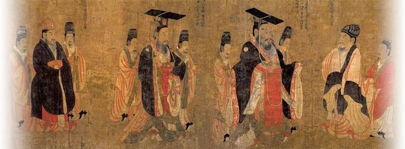

中国是世界四大文明古国之一，同时也是世界上流失文物最为严重的国家之一。
联合国教科文组织统计数据显示，目前我国有164万件文物散落在全球47个国家的213家博物馆中；中国文物学会提出，加上散落于民间的文物，我国流失文物的总数或达一千万件。
然而，目前中国没有任何一个机构能明确我国究竟有多少文物流失在海外。
“没有详实的调查，就没有充分的依据，想要追回那些近年来非法出境的文物当然困难重重”，全国政协委员贺云翱在今年两会提交有关海外文物保护提案时说。
面对流失文物，千万华夏儿女始终被叩问着：历代文物今安在？珍宝为何散天涯？百年文物尚堪求？
我们从国外15个博物馆的公开数据中爬取了15万条中国藏品数据，来描绘我国那些零落天涯的国之瑰宝，解答中华儿女心中的疑问……
据估算，我国流失文物中，有260万件散落于法国、230万件散落于美国、200万件散落于日本、130万件散落于英国、30万件散落于德国……所有流失文物中，属于国家一二级文物的绝世珍宝达100万余件。
根据我国流失文物在各国博物馆的数量分布，我们以图画的方式，将我国文物“四散至天涯”的状况生动地呈现出来。
这些流落到异国他乡的文物被收藏在不同博物馆中。其中来自英国、美国、法国、德国、俄国、加拿大、日本、韩国等八个国家的十五家博物馆收藏了十五万件以上的中国文物，这些文物的朝代横跨整个华夏文明，从人类文明初萌的新石器时代到传统工艺发展至鼎盛的清代，历史悠久、数量巨大、价值连城。
下面这张图片呈现的是十五家已建立网络数据库，同时收藏中国文物数量靠前的博物馆所藏中国文物的信息。图上横坐标显示的是朝代信息，不同颜色代表不同的博物馆，面积大小则象征着中国文物数量的多少。
总体而言，我国流失文物所属朝代主要集中在唐朝及以后，历代文物中数清朝文物的海外流失现象最为严重。除此以外，流失的商朝与周朝文物也不容忽视。各博物馆中陈列的青铜器、甲骨文等文物即属此类。
——
在这些博物馆的中国藏品中，有很多没有得到妥善的保存。如大英博物馆的《女史箴图》唐代摹本，是世界上仅存的两幅《女史箴图》摹本之一。其笔意色彩均高于我国故宫博物院收藏的宋代摹本，却未得妥善安置，被拦腰一分为二，出现了较为严重的损毁。
法国枫丹白露宫收藏的圆明园文物，以其数量之多、质量之佳，堪称“万园之园”在西方世界的再现，然而该馆于2015年失窃的15件文物中便有圆明园珍宝。流失于海外的国家珍宝，还有藏于美国的《历代帝王图》《捣练图》和“昭陵六骏”石雕中的“拳毛娲”、“飒露紫”，藏于日本的青铜器珍品商代猛虎食人卣……

阎立本《历代帝王图》
战争是造成我国文物流失的主要原因之一。百余年屈辱近代史，使得华夏大地五千年来积淀的文化瑰宝承受了不可逆的伤害。
西方列强铁骑之下，清宫文物流失最为严重。曾经清代宫廷收藏的蔚为大观的国之宝藏，如今却被却堂而皇之地陈列在大洋彼岸的博物馆和展览馆中。
从图中可以看到，清宫散佚文物主要藏于美国、日本、英国三个国家。其中美国、日本拥有的清宫文物以书画为主，而英国则以陶瓷居多。
流失到海外的清宫文物种类多样，有书画、陶瓷、玉器等多个类别，它们有着好听而富有朝代特色的名字。
非法盗掘、倒卖是我国文物流失的另一个重要原因，其中不乏各类珍品。例如，19世纪末20世纪初，河南安阳小屯村发掘的大量甲骨文残片，被美、英、德、日等国传教士购买并转卖至各国博物馆。甚至新中国成立后，尤其是20世纪80年代，我国仍不断有文物因被盗而走私出境，前后不下百万余件，2002年我国于美国拍卖行追回的六件汉代裸黑陶俑即被盗掘自西安。
该原因下，流失的万千瑰宝里最令国人心痛者当属敦煌文物。
“敦煌者，吾国学术之伤心史也”，陈寅恪曾这样评价道。
敦煌，是古时丝绸之路的节点城市，亚欧文化在此碰撞融合，“华戎所交，一大都会”。其藏经洞内所藏文献更是被称为“人类进入中世纪的钥匙”，其内容之丰富、意义之重大，甚至由此诞生了一个专门的世界性学科——“敦煌学”。
然而，上世纪初，刚从尘沙下醒来的敦煌藏经洞中的瑰宝不会想到，等待它们的将是零落天涯的命运。彼时，积贫积弱的清政府无暇去管西北边陲的这个小镇，而当地政府也毫无文物保护意识，任由珍贵的文物以低廉的价格一箱箱地被外国人运走。
如今，敦煌虽是中国的宝藏，然而我国所拥有的敦煌写本、印本的数量却次于英国、德国，仅排在第三位。除数量外，敦煌文物的语言种类方面，我国也远不及英德两国。
可以看到，我国藏有的敦煌文物语言种类只有8种，而英国有36种、德国有26种、法国有13种，中国在七个国家中仅能排至第四位；同时，每类文字平均的藏品数方面，中国也相对较少。
新中国成立后，便立即展开对已流失文物的追索工作，同时阻止文物继续外流。
建国初期，在周恩来总理的重视下，政府即从香港抢救购回过《伯远帖》《中秋帖》及《五牛图》等珍贵文物，避免其落入国外文物贩子之手。
1951年，文化部成立了“秘密收购小组”，主要负责收购易于流散的古画与善本书；
1982年11月19日，《中华人民共和国文物保护法》开始施行；
2002年，国家文物局设立“国家重点珍贵文物征集专项经费”，每年拨款5000万元用以回购文物；
截至目前，我国已与秘鲁、印度、意大利、美国、澳大利亚等国在内的19个国家签署了防止盗窃、盗掘和非法进出境文物的协定或谅解备忘录。
——
然而，文物追讨仍然面临着重重困难，部分欧美博物馆对于我国的文物追索并不配合。2002年，纽约大都会艺术博物馆、卢浮宫博物馆等7个欧美国家的18家博物馆，联合发布反对归还文物的《关于普世性博物馆的价值及重要性的宣言》，提出了“环球博物馆”等荒谬概念，企图永久性地占据他国珍贵文物。
近年来，随着我国综合国力的增强和国际地位的提升，在官方与民间的通力合作与努力下，我国文物回归的频次和数量逐渐增加。2019年4月，意大利归还的796件珍贵文物正是这一趋势的体现。对此，文化和旅游部部长雒树刚表示：“此次文物返还是中国流失文物追索返还工作中历时最长的案例，也是近20年来最大规模的中国流失文物回归。”
上图中，不同颜色代表不同的返还文物国家，圆圈的大小代表返还文物的数量。可以明显看出，近十年来我国文物回归的频次逐年增加，这是我国综合国力和文化软实力不断提升、文物保护意识不断增强的体现。
因为历史上的纷争动荡，也因为曾经文物保护观念的淡薄，无数华夏瑰宝流落异国他乡。
但是，流失海外的中国文物，将永远牵动着中华儿女的心，因为那是斩不断的民族情感和埋不掉的历史记忆。
天涯何处觅归途？海外流失文物重回祖国怀抱需要有强盛的国力和稳固的国际地位作保障，也需要本国民众文物保护意识的配合。文物是中国五千年悠久历史的见证，是中华灿烂文明的结晶，是华夏人民创造活动的历史遗存，一个民族的伟大复兴，必然呼唤她曾经孕育瑰宝的失而复得。